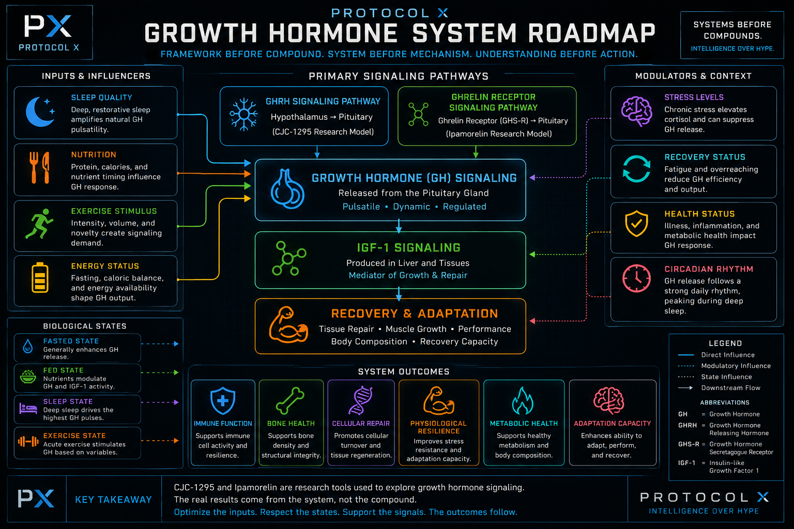

The CJC-1295 + Ipamorelin System
Before studying a compound, study the system it belongs to. CJC-1295 and Ipamorelin sit inside a larger conversation about growth hormone signaling, sleep, recovery, fasting, feeding, exercise adaptation, and metabolic status.
Where This Fits Within The Protocol X Pillars
CJC-1295 and Ipamorelin are usually discussed as compounds, but the Protocol X lens starts one level higher. The real subject is the biological system those compounds are being used to study.
Body
- Recovery
- Body Composition
- Exercise Adaptation
Longevity
- Metabolic Efficiency
- Hormonal Signaling
- Healthy Aging Research
The System Map
Before studying compounds, it helps to understand the system they belong to.
Growth hormone signaling does not exist in isolation. It operates inside a larger biological framework influenced by sleep quality, nutrition, recovery demand, exercise stress, energy availability, and downstream IGF-1 signaling.
The purpose of Protocol X is to understand these relationships before focusing on individual compounds.

Educational systems diagram. Simplified for conceptual understanding and not intended as a comprehensive representation of all biological pathways.
The important lesson is that compounds do not create the system.
The system already exists.
Compounds are simply one method researchers use to explore different parts of that system.
System before mechanism.
Understanding before action.
The Real Question: What Are You Trying To Accomplish?
One of the fastest ways to create confusion is to start with a compound name before defining the research objective. The better first question is simpler: what system are you trying to understand?
Recovery
Researchers often look at growth hormone signaling through the lens of repair, tissue adaptation, and the body's ability to return to baseline after stress.
Body Composition
Interest here usually centers on fat metabolism, lean tissue preservation, metabolic flexibility, and how energy status changes the signal.
Sleep & Recovery Cycles
Natural growth hormone release is closely tied to sleep architecture, especially the early deep-sleep window in many adults.
Exercise Adaptation
Resistance training, higher-intensity work, and recovery periods all interact with growth hormone and IGF-1 signaling.
Understanding The System Before The Compound
Growth hormone is not a standalone switch. It is part of a larger network shaped by sleep quality, nutrition, recovery demand, exercise stress, insulin signaling, IGF-1 production, and energy balance.
That is why two research contexts can look very different even when the same compounds are being discussed. A fasted system is not the same as a fed system. A recovered system is not the same as an overreached system. A well-slept system is not the same as a sleep-deprived system.
What Are CJC-1295 And Ipamorelin?
Although they are commonly discussed together, CJC-1295 and Ipamorelin are not the same thing. They influence different parts of the broader growth hormone signaling system.
Ipamorelin
Ipamorelin is commonly described as a selective growth hormone secretagogue. It is studied through the ghrelin receptor pathway, sometimes called the growth hormone secretagogue receptor pathway.
In simple terms: it is associated with a signal that encourages growth hormone release through a ghrelin-like route.
CJC-1295
CJC-1295 is a growth hormone releasing hormone analog. It is studied through the GHRH receptor pathway rather than the ghrelin receptor pathway.
In simple terms: it is associated with a different upstream signal that also connects to growth hormone release.
Why Are They Commonly Researched Together?
The simplest explanation is that they influence different pathways inside the same overall signaling system.
CJC-1295
Studied through the GHRH pathway.
Ipamorelin
Studied through the ghrelin receptor pathway.
Because those pathways can converge on growth hormone signaling, researchers often discuss the combination as complementary rather than identical. The point is not that one replaces the other. The point is that the two signals come from different directions.
Fasting, Feeding, And Growth Hormone Signaling
Growth hormone signaling changes with biological state. That is why fasting, feeding, sleep, and exercise matter in any serious discussion of this system.
Fasted State
Fasting is associated with natural increases in growth hormone secretion. From a systems perspective, this connects GH signaling to energy availability, substrate use, and metabolic adaptation.
Fed State
Feeding changes nutrient status and interacts with insulin, IGF-1, and energy balance. The signal does not operate in a vacuum; it responds to the broader metabolic environment.
Sleep State
Some of the most reproducible natural growth hormone pulses occur around the early part of sleep and are often associated with slow-wave sleep. Sleep quality is not a side note here.
Exercise State
Exercise can influence growth hormone signaling, especially in the context of intensity, recovery demand, and adaptation. Training stress changes the system being studied.
Understanding Two Different Research Models
One common point of confusion is the difference between CJC-1295 No-DAC and CJC-1295 with DAC. The important thing is not just the name. The important thing is the research model.
One of the most common misunderstandings surrounding CJC-1295 is the assumption that DAC is simply a stronger version of No-DAC.
From a systems perspective, that framework is incomplete.
DAC and No-DAC should be viewed as different research models rather than different intensity settings.
No-DAC Model
Conceptual model: shorter signaling window.
CJC-1295 No-DAC is commonly discussed as a shorter-acting GHRH-style research model. It is often framed around pulses rather than extended exposure.
It is a pulse-oriented research model frequently discussed in terms of temporary signaling events rather than prolonged exposure.
Emphasis is often placed on timing and signal dynamics.
DAC Model
Conceptual model: extended signaling window.
The Drug Affinity Complex changes the duration profile, creating a longer-acting research model. That makes it conceptually different from No-DAC rather than simply a stronger version of the same idea.
The Drug Affinity Complex alters the duration profile and creates a longer exposure model.
Discussion often centers around sustained signaling rather than shorter pulses.
DAC = Extended Exposure Model
Different models. Different questions. Neither framework is automatically superior.
Longer does not automatically mean better. Shorter does not automatically mean worse.
Protocol X Intelligence Brief
BLUF
Most people begin by studying compounds.
The better starting point is studying systems.
CJC-1295 and Ipamorelin are best understood as tools used to explore growth hormone signaling, sleep architecture, recovery pathways, exercise adaptation, and metabolic state.
The lesson is not simply understanding two compounds.
The lesson is understanding the biological framework surrounding those compounds.
When the framework becomes clear, the compounds become easier to understand.
Understanding is scalable.
The Bigger Lesson
When people first discover peptide research, it is easy to chase too many interesting systems at once.
Recovery. Sleep. Fat loss. Longevity. Cognition. Metabolism. Performance. Hormones.
Everything starts to look important. The problem is that trying to solve ten problems at the same time usually means solving none of them very well.
Protocol X is built around a different idea: narrow the frame, understand the system, then expand with clarity. Choose a few priorities. Learn them well. Understand what is changing and why. Then move to the next set.
Related Resources
Keep the next step focused on existing Protocol X resources that support framework thinking and organized research.